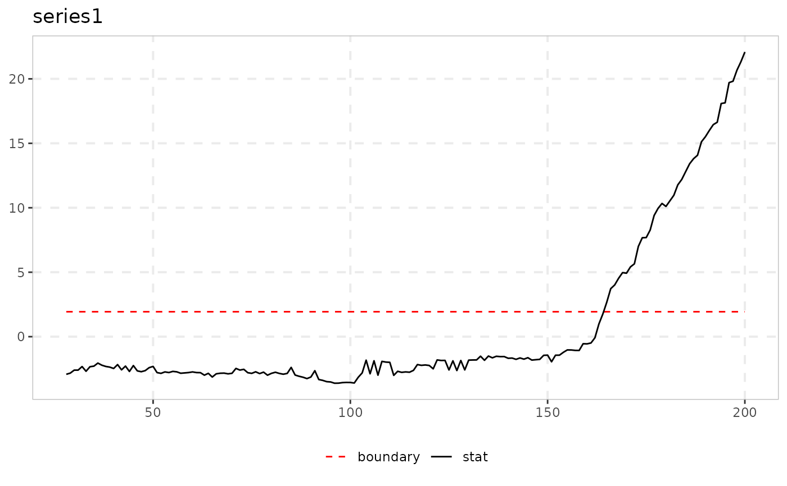
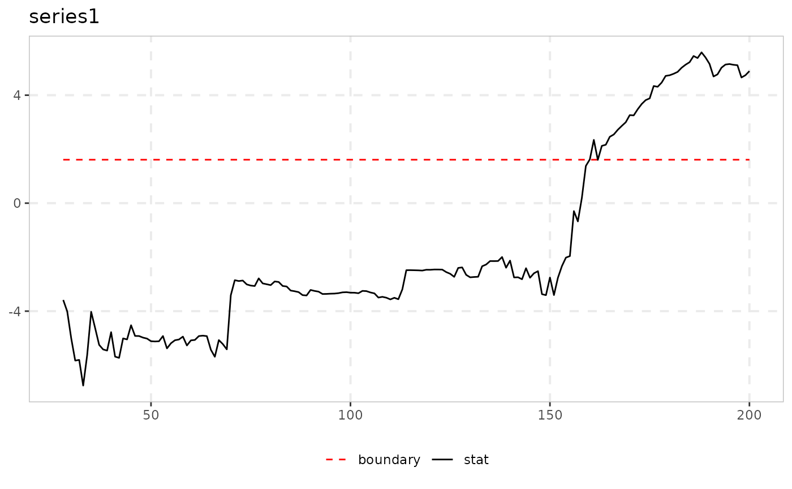

QPWY/QPSY Recursive Quantile Monitoring (Wu, Shi & Wu 2025)
Source:R/monitor_quantile.R
monitor_quantile.Rdmonitor_quantile implements the QPWY and QPSY real-time monitoring
strategies of Wu, Shi & Wu (2025). They are quantile-regression (QR) analogues
of the recursive ADF t-statistics of PWY and PSY, and they test at a chosen
conditional quantile tau, in contrast to the single full-sample test in
quantile_test. type = "qpwy" uses the expanding window
[1, r], which has the shape of badf in radf.
type = "qpsy" also takes the supremum over every window start, which has
the shape of bsadf.
Arguments
- data
A univariate or multivariate numeric time series object, a numeric vector or matrix, or a data.frame. A column may have leading or trailing
NAvalues, which describes an unbalanced panel in which series enter or exit the sample at different times. Those periods are filled withNAinbadfandbsadfand excluded from theadf,sadfandgsadfof that series. InteriorNAvalues (a gap in the middle of a series) are not supported. When any series is padded in this way, the panel statistics (bsadf_panelandgsadf_panel) are not available, and the function returnsNAfor them with a warning.- tau
Quantile to test at, in
(0, 1). It is fixed, in contrast to the"optimal"grid search inquantile_test, because eq. 25 of WSW takestauas a given parameter of the monitoring statistic and does not reselect it at each recursion point.- minw
A positive integer. The minimum window size (default = \((0.01 + 1.8/\sqrt{T})T\), where T denotes the sample size).
- nrep
Number of replications for the boundary: Monte Carlo draws of the limit with
boundary = "asymptotic", bootstrap resamples withboundary = "bootstrap".- sig_lvl
Significance level, one of
90,95,99.- seed
Optional seed for the Monte Carlo draws.
- type
"qpwy"(expanding window) or"qpsy"(also the supremum over window starts).- boundary
"asymptotic"(simulated limit, the default) or"bootstrap"(Algorithm 1 of Wu, Shi & Wu 2025).
Value
An object of class monitor_quantile_obj: a list with the statistic
path stat, the flat boundary, the estimated delta (reported for
both boundaries, used only by the asymptotic one), and
alarm and alarm_date (the first breach, NA if there is
none).
Details
The point statistic needs genuine QR fits, because there is no closed-form
recursive update as there is for OLS. QPWY needs O(T) fits and QPSY needs
O(T^2), so QPSY takes seconds for each series at n = 200 and the
time grows quadratically.
The boundary is a single flat value and not one value for each r.
It is the quantile of the supremum of each null path, constructed like the
sadf_cv of radf_mc_cv, which controls the first-crossing
false-alarm rate. boundary chooses how the null paths are generated.
With boundary = "asymptotic" (the default) the function simulates the
limiting null distribution delta * Q_{r1,r2} + sqrt(1 - delta^2) * Z_{r1,r2}
in each call. Here delta is a correlation coefficient estimated from the
data (as in quantile_test), Q is the Dickey-Fuller t
functional and Z is its counterpart driven by an independent Brownian
motion. Both are simulated for every window, so no QR fits are needed and the
boundary is cheap.
With boundary = "bootstrap" the function applies Algorithm 1 of Wu, Shi &
Wu (2025) to the whole path. It resamples the centred first differences of the
series with replacement, cumulates them into a null random walk and recomputes
the QPWY or QPSY path on it, nrep times. The boundary is the quantile of
the nrep path maxima. It follows the finite-sample distribution of the
statistic in the data at hand, so it removes most of the size distortion of the
asymptotic boundary described below. Each replicate costs a full statistic path,
which is O(T) QR fits for QPWY and O(T^2) for QPSY. The paper also
discards the first 100 draws of each resample. We omit this step because the
statistic has an intercept, so it does not depend on the level of the series, and
the draws are i.i.d., so the retained values already have the same distribution.
Set options(exuber.parallel = TRUE) to spread the replicates over
workers.
Note
The function simulates the critical value (the boundary) internally in each
call, with an unexported helper, quantile_boundary_sim. There is currently
no reusable exported cv counterpart for this function. This gap is tracked
separately and is not addressed here.
The function returns its own class and not radf_obj, so it does not work
with summary(), \link{datestamp} and tidy. It has its own print() and
autoplot() methods instead. print() shows the statistic, the boundary and delta. See
vignette("naming-and-analysis", package = "exuber") for which functions fit
the shared pipeline and which do not.
Caveats
The asymptotic boundary is well sized near the median in finite samples, with a
false-alarm rate of 3.5 to 4.0\
innovations, tau = 0.5). Away from the median the small early windows make
both statistics oversized, and QPSY badly so even with Gaussian innovations. The
false-alarm rate of QPSY is 35\
innovations it is 21\
(n = 100). With \(t_3\) innovations the rate for QPWY is 7.5 to 8.5\
tau = 0.2 and 0.8 and 12.5\
Wu, Shi & Wu advise against extreme quantiles in small samples and use bootstrap
critical values for monitoring, which is what boundary = "bootstrap"
provides. With it the false-alarm rate was between 4.5 and 6.5\
the cases above (n = 100 for QPWY, n = 60 for QPSY), including QPSY at
tau = 0.8 and 0.9. The exception is QPSY with \(t_3\) innovations at
tau = 0.9, which stays at 10\
less extreme tau help. For type = "qpsy" with tau away from 0.5 and the
asymptotic boundary, the function emits a short pointer as a message (see
suppressMessages) and stores it as attr(x, "caveat"). The
numbers for both boundaries are in docs/alternative-paradigms.md.
![[Experimental]](figures/lifecycle-experimental.svg)
References
Wu, R., Shi, S., & Wu, J. (2025). Quantile analysis for financial bubble detection and surveillance. Journal of Time Series Analysis, 46(5), 908-931.
See also
quantile_test for the static, full-sample version of this
test, and monitor for the monitoring alternative based on OLS.
Other monitoring:
monitor(),
monitor_cusum(),
monitor_lbi()
Examples
# \donttest{
# Heavy-tailed (t3) innovations, explosive from t = 150 to the sample end
y <- sim_psy1(n = 200, te = 150, tf = 200, seed = 7,
e = sim_innov(199, dist = "t", df = 3))
res <- monitor_quantile(y, tau = 0.5, nrep = 100, seed = 1)
print(res)
#>
#> ── monitor_quantile (QPWY, n = 200, minw = 27, tau = 0.5, sig_lvl = 95%, asympto
#>
#> series delta boundary alarm alarm_date
#> series1 0.623 1.934 165 165
#>
autoplot(res)
#> Warning: Removed 1 row containing missing values or values outside the scale range
#> (`geom_segment()`).

# Monitoring an upper quantile is typically more powerful for right-tailed
# bubbles, but see the Caveats section on extreme quantiles
autoplot(monitor_quantile(y, tau = 0.8, nrep = 100, seed = 1))
#> Warning: Removed 1 row containing missing values or values outside the scale range
#> (`geom_segment()`).

# QPSY: supremum over window starts too (O(n^2) QR fits, slower)
monitor_quantile(y[101:200], tau = 0.5, nrep = 100, seed = 1, type = "qpsy")
#>
#> ── monitor_quantile (QPSY, n = 100, minw = 19, tau = 0.5, sig_lvl = 95%, asympto
#>
#> series delta boundary alarm alarm_date
#> series1 0.754 2.172 53 53
#>
# Bootstrap boundary (Algorithm 1 of Wu, Shi & Wu): one full statistic path per
# replicate, so keep nrep small in a first run
monitor_quantile(y, tau = 0.8, nrep = 49, seed = 1, boundary = "bootstrap")
#>
#> ── monitor_quantile (QPWY, n = 200, minw = 27, tau = 0.8, sig_lvl = 95%, bootstr
#>
#> series delta boundary alarm alarm_date
#> series1 0.831 1.675 161 161
#>
# }